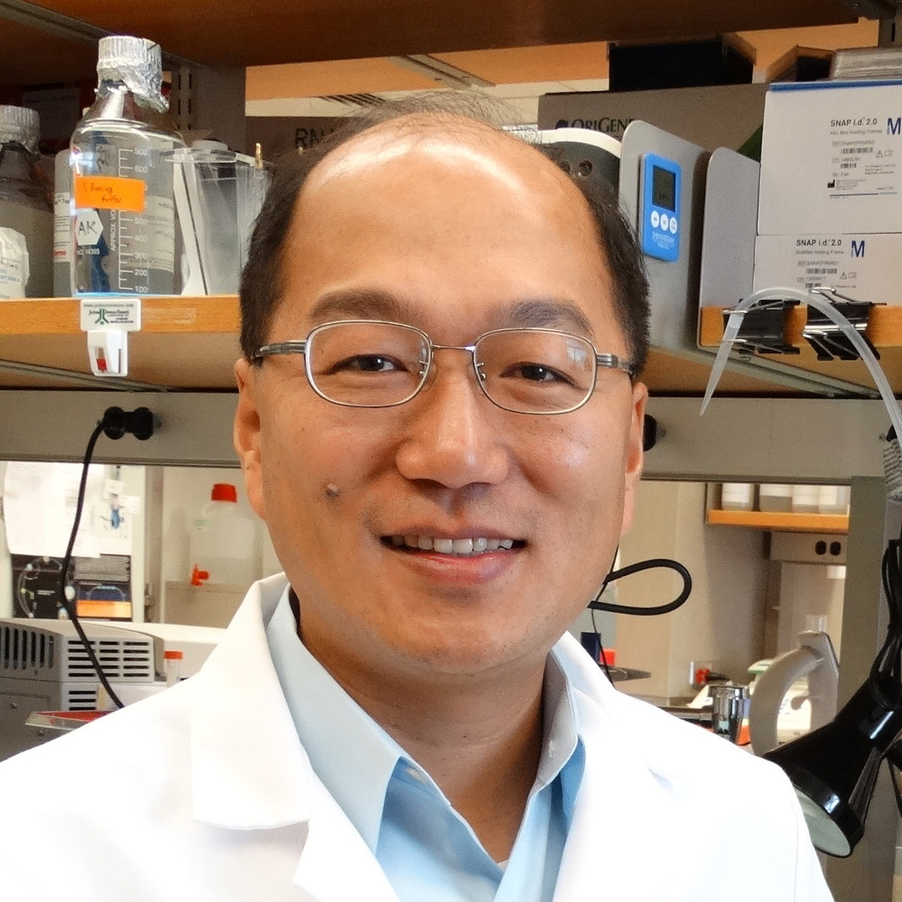

<div class="container">
    <div class="row">
        <div id="speaker-detail" class="col-lg-6 col-lg-offset-3">
            <div class="row">
                <button title="Close (Esc)" type="button" class="mfp-close">×</button>
                <div class="col-md-4 col-lg-4">
                    
                    <br />
                </div>
                <div class="col-md-8 col-lg-8">
                    <h2>Tzong-Shi Lu, Ph.D. <br>呂宗熙 博士</h2>
                    <h3>Instructor, Brigham and Women's Hospital, Harvard medical School</h3>
                    <p>I am currently Instructor in Medicine at Harvard Medical School and Associate Biologist at the Renal Division of the Brigham and Women’s Hospital. My current research focus is in the area of genetic profiling in kidney disease, specifically in the mechanisms of cystogenesis in Polycystic kidney disease (PKD) and genes involved in the prevention and treatment of accelerated Cardiovascular disease that affect patients with Chronic Kidney Disease (CKD).</p>
<p>During my Ph.D. training I studied the role of Heat Shock Proteins (HSPs) in the prevention of vascular permeability changes, tight junction disruption and mitochondrial dysfunction. In 2005-2007, I completed my research fellowship at Beth Israel Deaconess Medical Center (BIDMC). My research at BIDMC led to the identification of a potential role for CB1 as a therapeutic target for HIV management through blood-brain-barrier regulation. In 2008, I continued my training at the Renal Division, Brigham and Women’s Hospital (BWH) in studying accelerated vascular disease in CKD. Our research revealed for the first time that vascular Klotho deficiency potentiates the development of human arterial calcification and mediates resistance to FGF-23 which led to a publication in Circulation in 2012 that was ranked the top 1% most highly cited articles in Clinical Medicine since 2014 to present. In addition, our findings on HSP72 and its role in inhibiting the development of vascular calcification (VC) was published in the Journal Cardiovascular Research. In 2013, my research career took a new focus in the molecular mechanisms of HSPs-cell-junctional proteins association, and its role in cyst formation in PKD which has become a core area of my research now as junior faculty member at BWH. At 2015, part of my new research project at PKD has been published in Physiological Genomics and led to two other manuscripts in review.  Recently, I was awarded “New Investigator Award” from American Physiology Society at annual Experimental Biology 2016 meeting.</p>
<p>In the short term, my research goal is to investigate the genetic profiling and molecular mechanisms in the development of VC caused by CKD and cyst formation at PKD. My intermediate goal is to study the biological functions of HSPs induction medicines, and their potential to modulate vascular dysfunction in Metabolic Syndrome and cystogenesis at PKD. My long-term goal is to investigate whether HSPs are potential new diagnostic markers and therapeutic targets to prevent accelerated Cardiovascular disease and Kidney diseases.</p>

                </div>
            </div>
        </div>
    </div>
</div>
